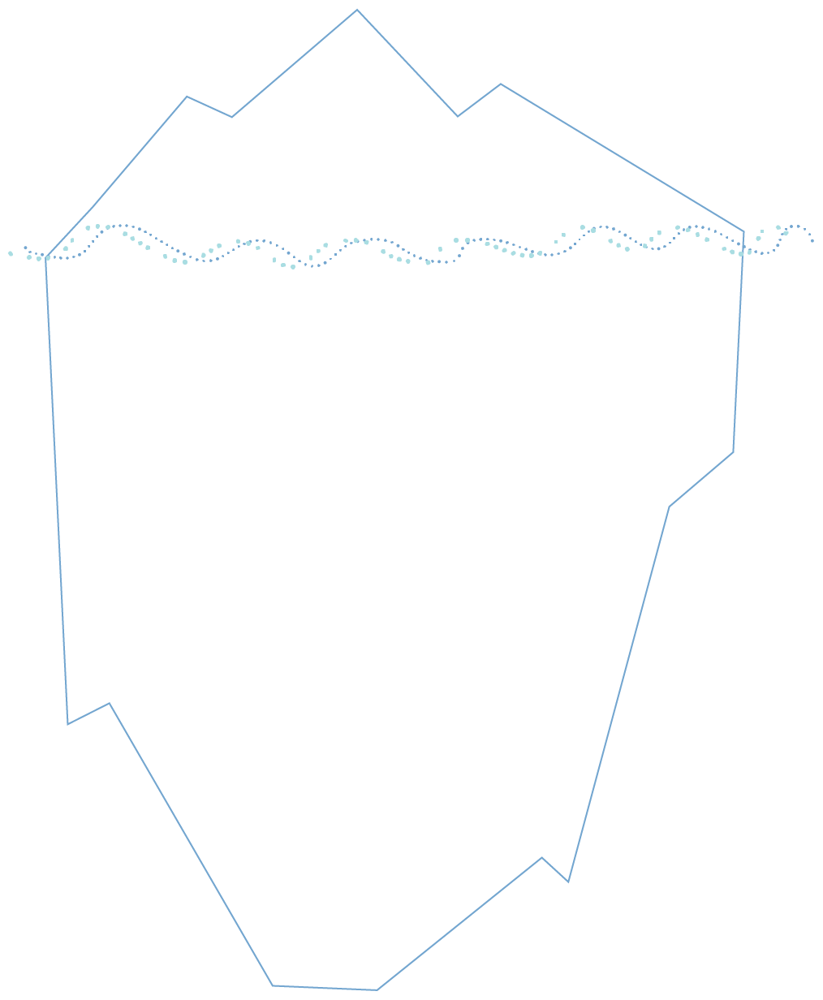

Writing as a process that supports analysis
Drafting and analysis is an iterative process
I think I learn by making handwritten notes, it’s part of my learning style
comment by experienced social worker, Children’s Services, WiSP project
Most social workers make handwritten notes as part of their everyday practice for different purposes: to jot down specific details – dates, names, observations – while in meetings, talking with someone, observing in a particular situation. The notes are important in helping you remember specific details and usually form the basis for more detailed description, explanation and evaluation written in publicly visible texts at a later point e.g. case notes and assessment reports logged on ICT systems.
Such notes, whether in handwriting in notebooks or in digital form on laptops, also have an important function in the process of analysis.
Note making, however brief, is a form of drafting ideas, helping the writer to question their thoughts and the links they’re making, and identify any inconsistencies that come up. Drafting provides some space in a busy working day for reflection, for creating some distance (in time and perspective) between actual situations and events, and critical reflection and examination of that situation. Creating opportunities for such reflection is central to analysis.
Drafting is usually considered a key part of producing high-quality written texts of any kind (professional, literary, scientific) and given the complexity of social work writing, having time to draft written texts should be essential. Yet, the reality for many social workers is that there is little time for drafting. This can mean people feel they have to get it ‘right’ the first time. Strategies that people use to create some time drafting and reflecting time include:
- Make brief notes on situations
- Make brief reflective comments about people, events and situations
- Write verbatim some comments that people say
- List questions about aspects that are unclear
- Write brief personal comments about feelings, concerns
- Talk with colleagues
- Listen to colleagues
- Ask colleagues for feedback on particular sections of a record
Practical exercise: Drafting
- Do you take notes and what purposes do they serve?
- What particular value do you think your notes have in analysing a situation and in thinking about how you might write an analysis?
- What strategies do you use to create space for reflection and developing an understanding?
- Do you ask colleagues for feedback on sections that you are finding tricky?
- Do you offer to give feedback to others?
The Intuition Iceberg
One example of a drafting strategy to support your development of hypothesis
Intuition is the process that happens when we draw on our experiences, recognising cues in a situation, spotting patterns and then building a narrative about what is going on. Using our experience to inform judgement is of course a very useful aspect of our professional practice, but challenges can pop-up when we need to demonstrate why we know what we know.
Unexplored intuition can be a vehicle for bias, informed by our life experience, and our cultural backgrounds. Everybody has bias; we need to be constantly examining how these elements of decision making impact on our written analysis.
By maintaining a healthy curiosity about your own intuition and cultural assumptions, you will be well placed to write thoughtful written analysis. Openly exploring what you don’t know about a written hypothesis can help you build anti oppressive practices into your written analysis.
Practical exercise: Intuition Iceberg
- Think about a time you wrote something in your notes that was based on your intuition or professional judgement.
- Write it on the tip of the iceberg. This decision, the ‘tip of the iceberg’, represents a complex web of knowledge and experience that lies underneath.
- Write freely in response to these questions to help you explore what your intuition is built on.
How do I know what I know?
- Am I basing my decision on an experience I have had before?
- In what ways was this previous situation similar? In what ways was it different?
- Do I have particular professional knowledge that is related to this situation?
- Have I read the most recent research and informed myself about this kind of experience?
- Am I taking a trauma-informed approach to understanding the people I am supporting?
Am I aware of what I don’t know about this situation?
- Are the people I am working with different from me?
- Do we have different values or cultural beliefs?
- How much do I know about the culture of the people I am writing about?
- Have I explored the histories, inequalities and intersections of oppression that this culture may face?
What is the context of my intuition?
- How do I feel about the situation? Am I experiencing a sense of anger, annoyance, relief, frustration, hopelessness, joy?
- Do these people ‘do’ family in a way that is different from my experience of family?
- Do I think this is good or bad?
- Do I feel any emotions about sharing my decision with the people I am supporting or my colleagues?
- If I had more time, what would I do differently?
Iriss is a charitable company limited by guarantee. Registered in Scotland: No 313740. Scottish Charity No: SC037882. Registered Office: Brunswick House, 51 Wilson Street, Glasgow, G1 1UZ.